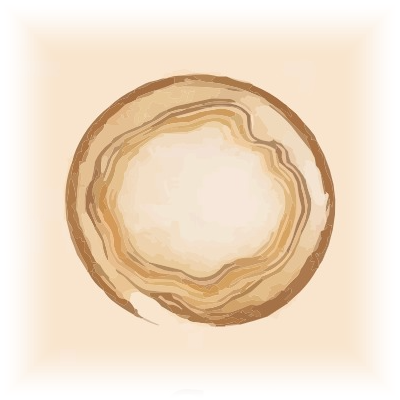
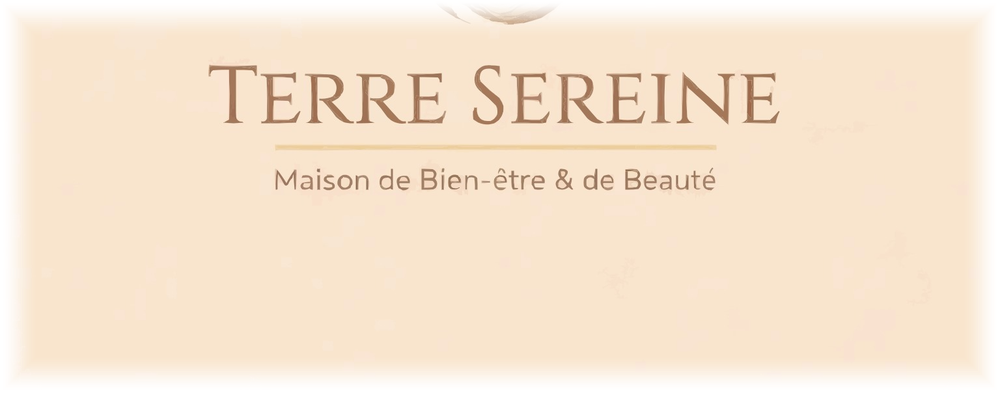
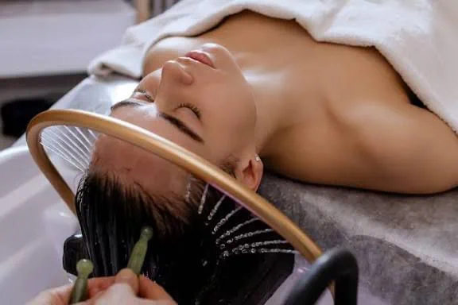
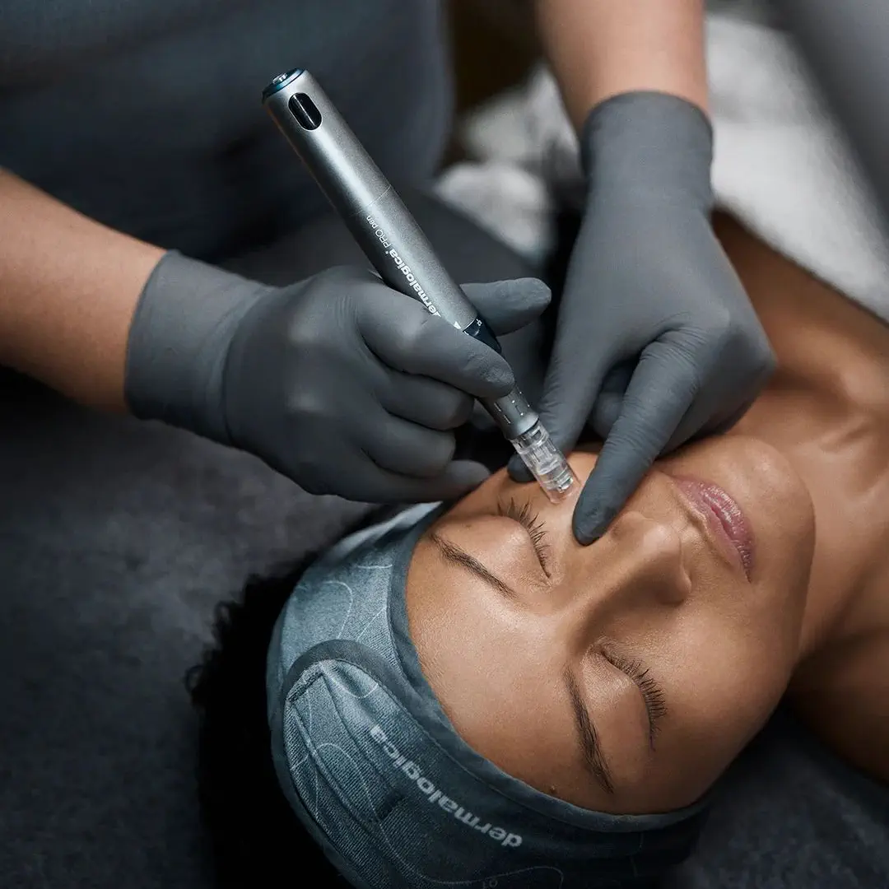

Chez Terre Sereine, chaque rituel est pensé comme une expérience complète, alliant expertise de la peau et libération du corps. Du soin du visage aux rituels corps, chaque protocole est entièrement personnalisé pour répondre aux besoins de votre peau et aux tensions de votre corps. Plus qu’un soin, chaque expérience se prolonge dans un moment de calme et de lâcher-prise, pour vous offrir une sensation durable de légèreté.

Lavage en profondeur, massage crânien, vapeur d'eau thermale. Un soin japonais qui relâche les tensions et réveille la brillance des cheveux.
Découvrir le rituel
Le soin nouvelle génération pour une peau parfaite. Un teint frais, lumineux et éclatant dès la première séance, sans éviction sociale.
Découvrir le rituel
Des micro-pointes très fines stimulent la peau en douceur. Effet « peau neuve » sans douleur, pour un éclat retrouvé tout en respect.
Découvrir le rituel
Sculpture corporelle aux outils de bois. Technique colombienne pour remodeler, raffermir et redessiner la silhouette.
Découvrir le rituelEnveloppement thermo-actif. Stimule la circulation, draine et lisse la silhouette en profondeur, séance après séance.
Découvrir le rituel
Mouvements doux et précis pour relancer la circulation. Légèreté retrouvée, silhouette affinée.
Découvrir le rituel
Le dôme infrarouge enveloppe le corps sans chauffer la tête. Détoxification profonde, sommeil réparateur.
Découvrir le rituel
Basaltes volcaniques chauffés, glissés le long des méridiens. Un voyage de relaxation profonde.
Découvrir le rituelChaque visite à Terre Sereine suit un même fil, pensé pour vous installer dans la lenteur dès les premiers instants.
À votre arrivée, nous prenons un moment pour échanger sur votre besoin du jour, votre état de forme, vos sensibilités. C'est de cette conversation que naît la personnalisation du soin.
Vous êtes installée dans un espace dédié — lumière chaude, parfums discrets, musique posée. Le protocole se déroule sans précipitation, à votre rythme.
Chaque rituel se referme par un instant de thé, le temps de revenir à vous, de prolonger la sensation et d'échanger avec votre praticienne sur les gestes à reproduire chez vous.
Pour réserver un soin, vous pouvez prendre rendez-vous en ligne sur Planity, nous écrire via le formulaire ou nous appeler directement.